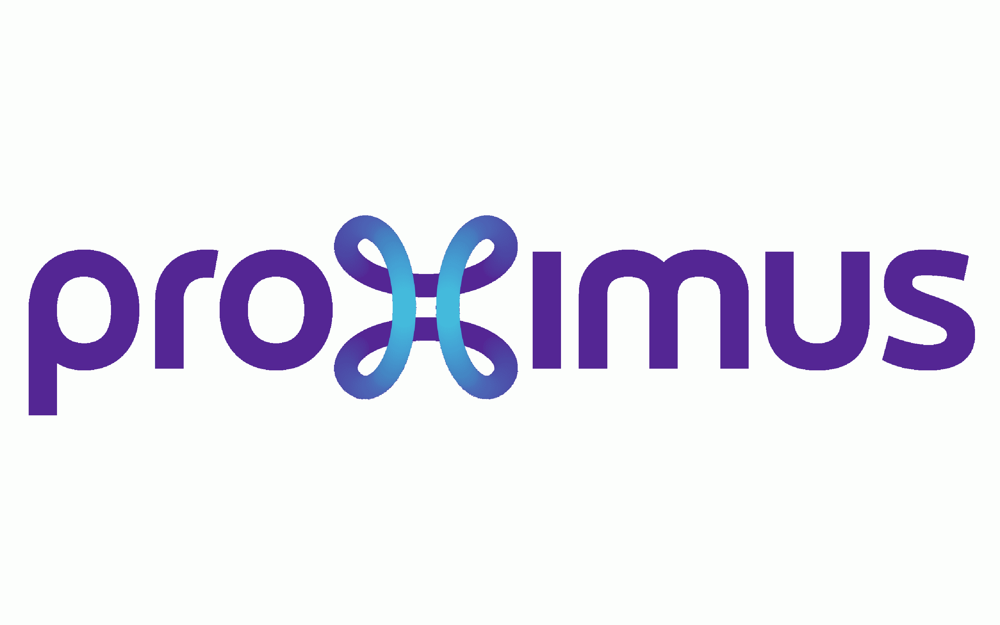
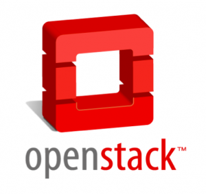

“NTX is a fun, interactive workspace which focuses on innovative culture, inclusion and sustainability”
ABOUT YOU
CLEAR VISION FOR SOFTWARE CHARACTERISTICS AND FUNCTIONS
with a proven experience in a similar position
PROVIDE TECHICAL GUIDANCE AND COACHING TO DEVELOPMENT TEAM
Be able to write and promote best practices.
DRIVEN BY THE DESIRE TO AUTOMATE AND SCALE EVERYTHING
Be able to understand domain specific topics and how they impact the team’s operational success.
EXCEPTIONAL COMMUNICATION SKILLS
coupled with strong customer satisfaction acumen.
As a Software Factory Architect @NTX, you will …
Participate to projects, initiatives and designs
Should be able to study the space to gain understanding of the needs
Maintain proactive async communication with staheholders to provides updates
Establish strong partnerships
To collaborate well with EC service managers, internally and with partners
Build strong relationships with differents teams.
Build
Design concrete solution which meet well defined-objectives
Establish comprehensive documentation, guidelines and blueprints.
Offer bespoke support where high priority opportunities arise.
Be Team multiplier
Improve collaboration and remove friction within and around our team.
Write high level technical documentation
Promote a positive, productive and constructive engineering culture toward adopting best practives, experimentations and aiming quickly toward success.
NTX is a young start-up founded by powerful and leading IT companies


Our mission is to manage and evolve the Network, Security and UC/VC infrastrustures of the European Commission. We provide a challenging and leading edge technological environment with unpreceded performances and capacities, supported by the open source community and the biggest technology vendors.
You may be fit for this role if you have…
8+ years experience working in a Software architecture position
Possess strong technical background with emphasis on Python, Perl, containerization and CI/CD.
Motivation to create and improve existing application
Experience using version control, CI/CD.
Ability to follow devops approach.
Enjoy collaborating and sharing ideas with team
Be comfortable working remotely and potentially asynchronously by learning on your ability to communicate written ideas effectively with strong attention to details
Motivated to deliver high quality solutions quickly

